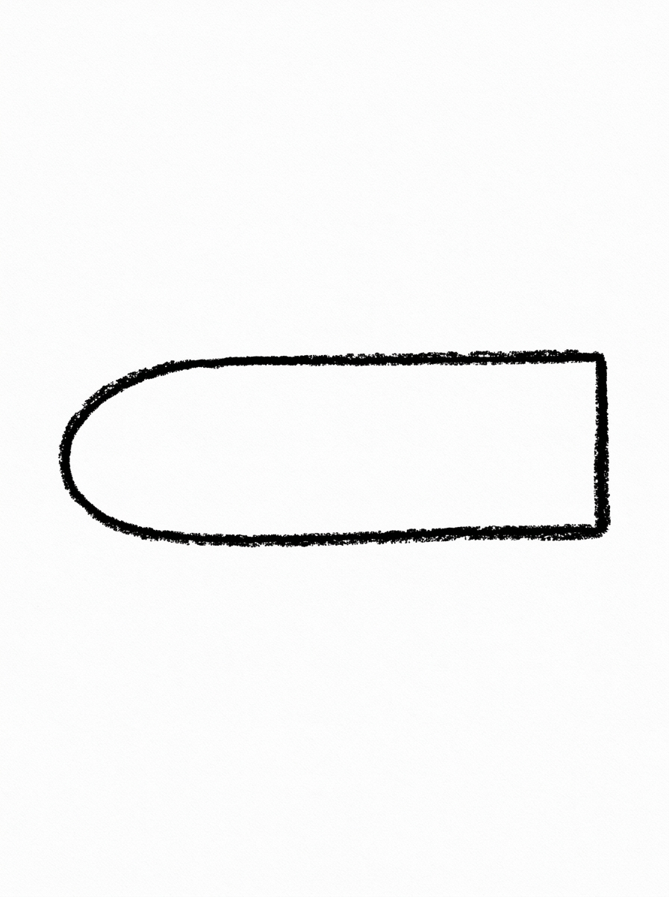
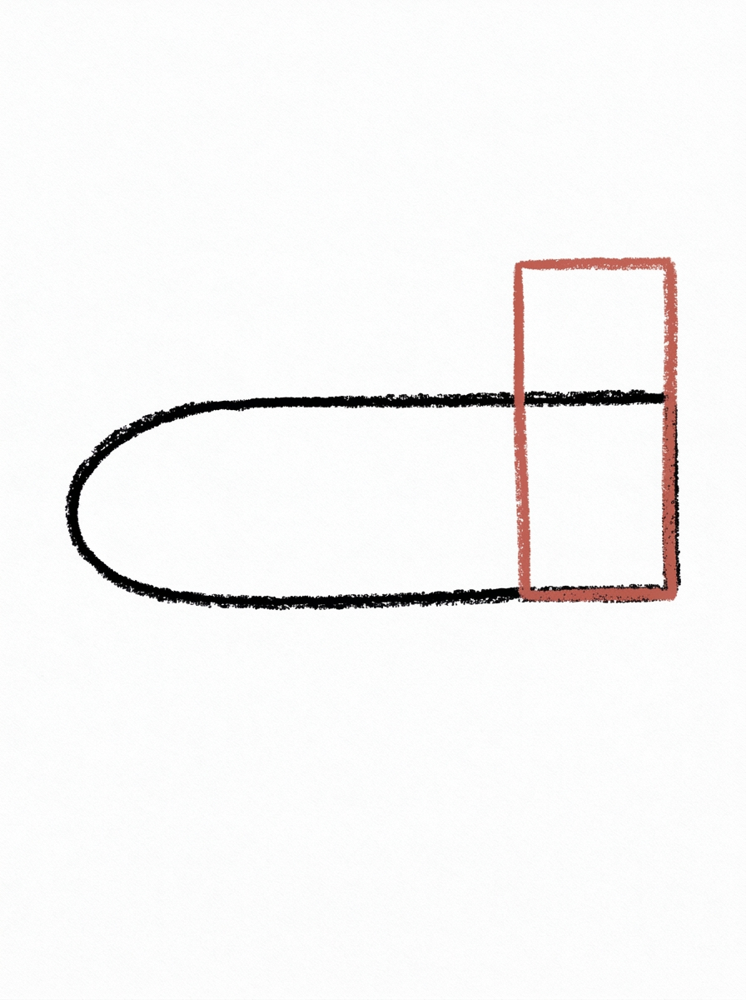
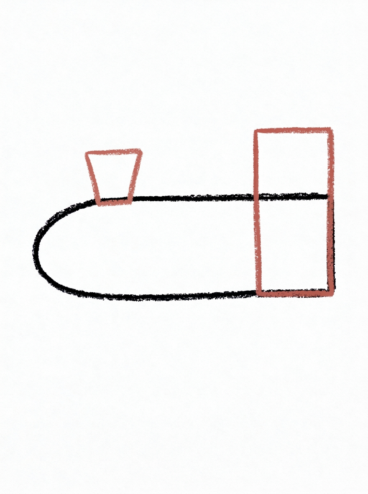
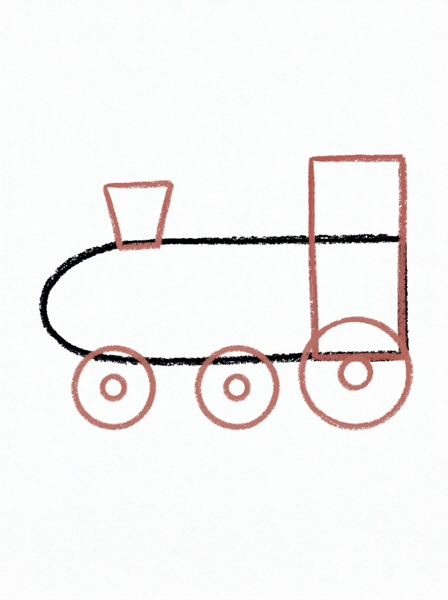
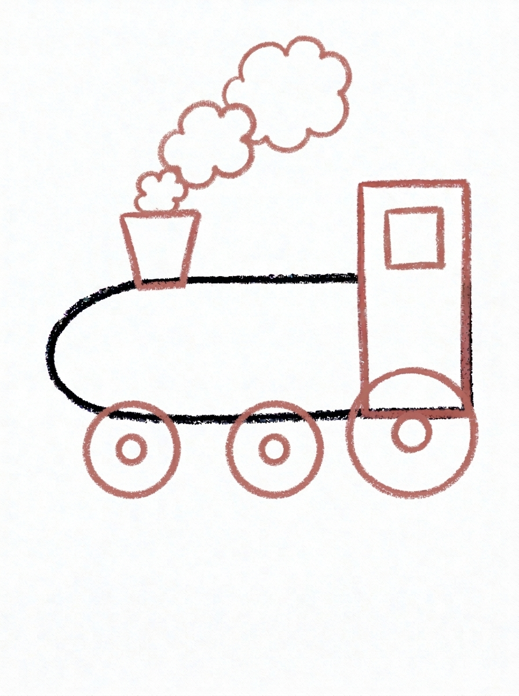
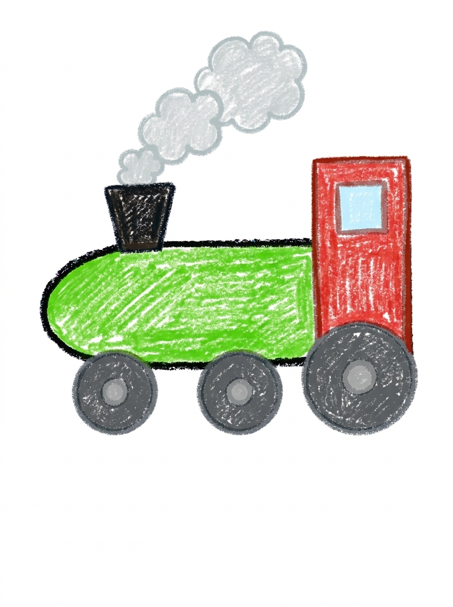

Train Drawing for Kids How to Draw A Train in 6 Easy Steps
Quick Answer
Draw a train in six easy steps: a long boiler, a tall cab, a chimney, three wheels with rings, a window and three puffs of smoke, then color it green and red. The wheels sit on one line like a track. Made for ages 3 and up, free, no signup needed.
At a Glance
- Subject: How to draw a train
- Ages: 3+
- Steps: 6 steps
- Time: ~15 min
- Difficulty: Easy
- Supplies: Paper, crayons
A train is a drawing that goes sideways — one long boiler, a tall cab at the back, and three wheels all lined up on an invisible track. Every part is a shape your child already knows, stretched out in a row.
✏️ Draw Your Train in 6 Easy Steps
One step per box — this step by step train drawing shows each new part in a different color so kids can see exactly what changed.
Step 1: The Boiler

Draw one long shape lying across the page, round at the front and flat at the back. That is the train's boiler.
Step 2: The Cab

Draw one tall rectangle standing at the back end of the boiler, rising above it. That is the cab, where the driver sits.
Step 3: The Chimney

Draw one short chimney on top of the boiler near the front, wider at the top than at the bottom.
Step 4: The Wheels

Draw three wheels along the bottom — two smaller wheels under the boiler and one big wheel under the cab — all sitting on the same line — and draw one smaller circle inside each wheel as its ring.
Step 5: The Window and Smoke

Draw one square window inside the top part of the cab, and three puffs of smoke above the chimney, each puff bigger than the one below it.
Step 6: Color It In

Color the boiler bright green and the cab red. Make the chimney black, the window pale blue, and the wheels dark grey with lighter grey rings. Color the smoke puffs light soft grey.
📊 Train Drawing by Age
Every age can join in — just adjust the job.
| Age | What they can do | Tip |
|---|---|---|
| 3-4 | Draw the long boiler shape and color the train in — bright green boiler, red cab. | Turn the paper sideways if you can, and start the boiler in the middle — a train needs more width than height. |
| 4-5 | Add the tall cab at the back, the chimney near the front, and line the three wheels up along the bottom. | Draw a light pencil line across the bottom first to act as the track, so all three wheels sit on the same line. |
| 6+ | Finish all six steps, including the ring inside each wheel and the three smoke puffs, smallest to biggest. | Smoke puffs are a size-ordering game: have them say 'small, medium, big' out loud as they draw each puff. |
🖨️ Download Your Free Train Drawing Printable
The printable lays out all 6 steps one per box, big enough for little hands — kids draw right alongside each step.
⬇️ Open Free Printable 🖨️ Print🎁 Free printable for ages 3+
🚂 Train Trip Page
Send your train on a trip: draw a track under the wheels running off the edge of the page, hills and a station behind it, and a passenger waving from the cab window. Where is the train going — the beach, grandma's house, the mountains? Write the destination under the drawing (or dictate it for a grown-up to write) and name your train line.
What You'll Need to Draw A Train
All you need is a pencil, an eraser, and crayons or markers. For the colors in the tutorial, have bright green ready for the boiler, red for the cab, black for the chimney, pale blue for the window, dark grey and a lighter grey for the wheels and their rings, and light soft grey for the smoke. Regular printer paper or a sketchbook both work.
What They're Learning
This tutorial practices long horizontal shapes, a tall rectangle, and circles in two sizes — big and small wheels, each with an inner ring. Kids practice lining objects up on a shared baseline (the track), size ordering with the three growing smoke puffs, and counting: three wheels, three puffs, one window, one chimney.
Make It Yours
Try adding passenger cars behind the cab — rectangles on wheels, each carrying something different — a night train with a glowing yellow window, a rainbow train with a different color on every part, or a tiny faraway train crossing hills in the background of another picture. A tunnel for the train to dive into is a great next-page project.
🛒 Our Favorite Drawing Supplies
These are the supplies we reach for in our own home — washable (because kids), quality paper, and enough colors to avoid fights.
As an Amazon Associate, MomYouNeedThis earns from qualifying purchases — at no extra cost to you.
💡 Train Drawing Tips for Parents
Step 4 is where train drawings usually wobble: three wheels at three different heights look like the train is bouncing. A light pencil line across the bottom of the page before the wheels go in — the 'track' — fixes it in one stroke. Sit every wheel's bottom on that line, and the train stands properly. Two small wheels under the boiler, one big one under the cab: count and size them together.
In step 5, the smoke puffs climb up and get bigger — small, medium, big. If they come out the same size, it still looks fine, but the growing stack is what makes the train feel like it's moving, so it's worth a redo if they land backwards. The window goes inside the top of the cab; if it drifts low, it looks like a door, which is also acceptable train design.
🚂 Trains in the Real World
Trains are the heavy lifters of the land: one locomotive can pull a line of cars longer than a whole street. The first trains ran on steam — fire boiled water, the steam pushed the engine, and the smoke from the chimney became the most famous part of the picture. That is the classic engine in this drawing, puffing away.
Today most trains run on diesel or electricity, whooshing quietly where steam engines chuffed. But every train still does the thing trains have always done: follow the track, stop at stations, and carry people and cargo farther than feet or horses ever could. Ask your child where this train's track leads.
✋ Warm-Up: Smoke Puffs and Window Squares
Warm up with the train's softest part: smoke. Draw a trail of cloud puffs across the scrap page, small at first and growing bigger, like a dotted line made of pillows. Cloud bumps again — you will notice this site believes in the cloud bump. Then a row of squares for windows, evenly spaced, counting as you go.
If the squares wander up and down, call it a train going over hills — or draw one straight pencil line first and sit every square on it like birds on a wire. A light guide line is not cheating; real artists use them constantly and erase them later.
📖 Give Your Train a Story
Trains exist to go somewhere, so give yours a route. Where does the track start, what is the very next station, and who is riding in the car behind the engine? A dictated sentence or two under the drawing — the 9 o'clock to Grandma's, now boarding — turns a vehicle into a journey with passengers who have plans.
For the return trip, the airplane tutorial covers the fast way home. A train page and a plane page side by side make a travel diptych — and a ready answer to 'what should I draw today?' for weeks. Keep the transport stories moving with how to draw a car on the road and how to draw a robot at the station.
❓ Train Drawing FAQs
What is the easiest way to draw a train?
Draw one long boiler lying across the page, add a tall cab at the back, a short chimney near the front, and three wheels along the bottom. Finish with a square window, three puffs of smoke, and color.
What age is this train drawing for?
It's made for ages 3 and up. The shapes are all preschool-friendly — long shapes, a rectangle, circles — and younger kids can do the boiler and coloring while older kids add the wheel rings and smoke themselves.
What supplies do we need?
A pencil, an eraser, paper, and crayons or markers. For colors you'll want bright green, red, black, pale blue, dark grey with a lighter grey, and light soft grey for the smoke.
Is the printable really free?
Yes — every printable on MomYouNeedThis is 100% free, including this train drawing tutorial. There is no signup, no email, and no catch — just download, print, and draw.
How do I print it?
Open the PDF and choose Print, then set the scale to 100% (sometimes called Actual Size) so the steps print at full size. The tutorial is designed for regular US Letter paper, and plain printer paper works perfectly.
Which end is the front of the train?
The round end is the front — that's the end the chimney sits near, puffing smoke as it goes. The tall cab at the flat back end is where the driver rides, looking forward over the boiler.
Why is one wheel bigger than the others?
The big wheel under the cab is the driving wheel — on old steam trains, the back wheel was the big one that pushed the train along, while the smaller wheels up front helped it roll and steer. It also makes the drawing easy to check: two small, one big.
Can my train have cars behind it?
Yes — a train with just an engine looks great, but cars are easy: draw a rectangle behind the cab on two wheels, then another, and link them with a short line. Each car can carry something different — animals, presents, or more passengers.
📚 Keep Exploring
- ✏️ All 76 Drawing Tutorials 76 free step-by-step drawing tutorials for kids.
- 🚗 Vehicle Coloring Free vehicle coloring pages for kids.
- ✏️ Drawing Practice Free printable drawing pre-writing worksheet for toddlers.